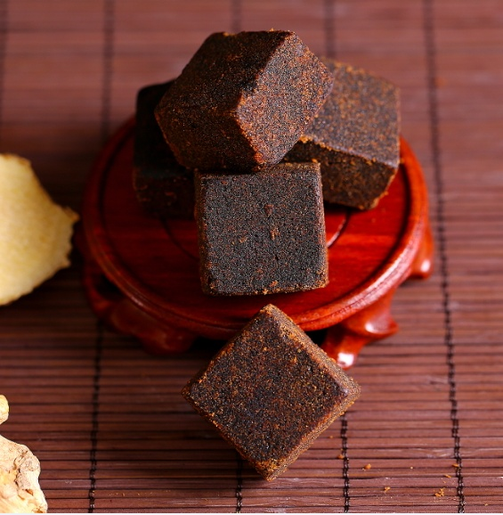
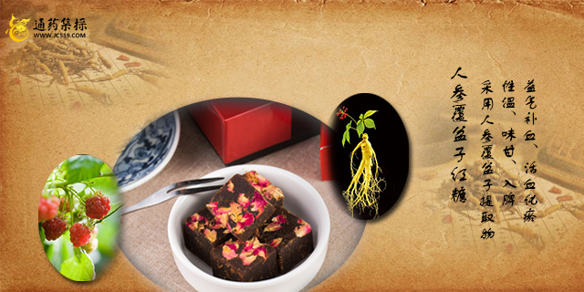
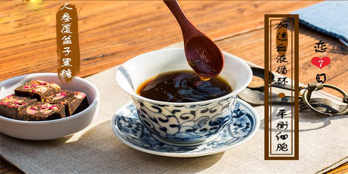
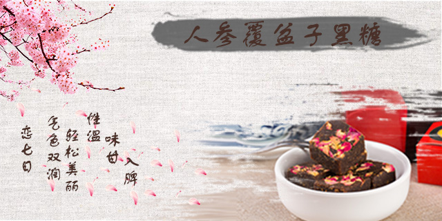

为了解决大家的忧愁，小编特意寻找了许久，终于不负众望，找到了女性朋友最佳的伴侣一组方黑糖！

很多人费了那么大劲却不知道"女子不可百日无糖"，温性的黑糖可以"温而补之，温而通之"。黑糖不仅可以缓解痛经，还是提升颜值的美容良方。高纯度黑糖，本身就可强效缓解大姨妈痛、手脚冰凉。修正药业在传统黑糖的基础上，又选取了黑糖的好盆友们——人参、生姜、覆盆子，组成了更具功效的阵容。
中医认为，组方黑糖性温、味甘、入脾，具有益气补血、健脾暖胃、缓中止痛、活血化淤的作用，具有养 生功效、美容功效、保健功效、延缓衰老等功效。
药食同源配方材料
1.红糖：采用广西地道的甘蔗成品糖，只采用物理方法对甘蔗提汁、澄清、蒸发、结晶、成型以及包装处理生产出来赤砂糖。制作过程无任何化学添加剂，溶解过程清澈、无杂质，有蜂窝状。其含有微量元素，如钙、钾、铁、镁及叶酸和其它矿物质等。具有很高的营养价值，而且有利于人体内酸碱平衡。针对女性既补气血又可排毒。加速新成代谢、促进血液循环、锁水护肤、通淤排毒、改善睡眠、增强机体免疫力、延缓衰老。
2.覆盆子：补肝肾，缩小便，助阳，固精，明目。覆盆子油属于不饱和脂肪酸，可促进女性荷尔蒙的合成
3. 若羌枣：补中益气，健脾胃，达到增加食欲、补气养血、养血安神
4. 人参：大补元气，固脱生津，安神。治劳伤虚损，食少，倦怠，反胃吐食，大便滑泄，虚咳喘促，自汗暴脱，惊悸，健忘，眩晕头痛，阳痿，尿频，消渴，妇女崩漏，及久虚不复，一切气血津液不足之症。

主要功能介绍
解决各种分型痛经
1.温经散热活血化瘀（寒凝血瘀）
2.活血化瘀理气行滞止痛（气滞血瘀）
3.益气养血痛经止痛（气血虚弱）
4.平肝解郁养血清热（肝郁血热）
5.理气和胃行气活血
温馨提示：
1.生理期期间尽量不要洗头
2.生理期期间要注意保暖
3.忌喝冷饮、吃点甜食
5.拒绝疲劳、不要太情绪化
7.忌盆浴
8.生理期宜食：麻油猪肝，红豆汤、桂圆汤、八宝粥等等
产品优势：
普通黑糖和组方黑糖有什么区别？
普通黑糖的功效：补血排毒和止痛化瘀。
组方黑糖的功效：
1.排毒、抗菌、消炎、色斑
2.活络气血、增加能量
3.宫寒、缓解痛经、美容养颜
4.驱风散寒、解热镇痛
5.气色双润、轻松美丽
6.失眠多梦、乏力、气血亏虚

适用人群：
子宫寒凉的人：黑糖、人参、生姜皆有驱寒暖宫的效用
脾胃虚弱的人：生姜性温，可治胃气不和，与黑糖结合补中益气，健脾暖胃。
缺铁贫血的人：每块组方黑糖含至少含7毫克铁，补血首选
美容减肥的人：黑糖中的天然酸类可调节色素代谢，覆盆子酮的减肥功效是辣椒素的3倍。

老姜红糖